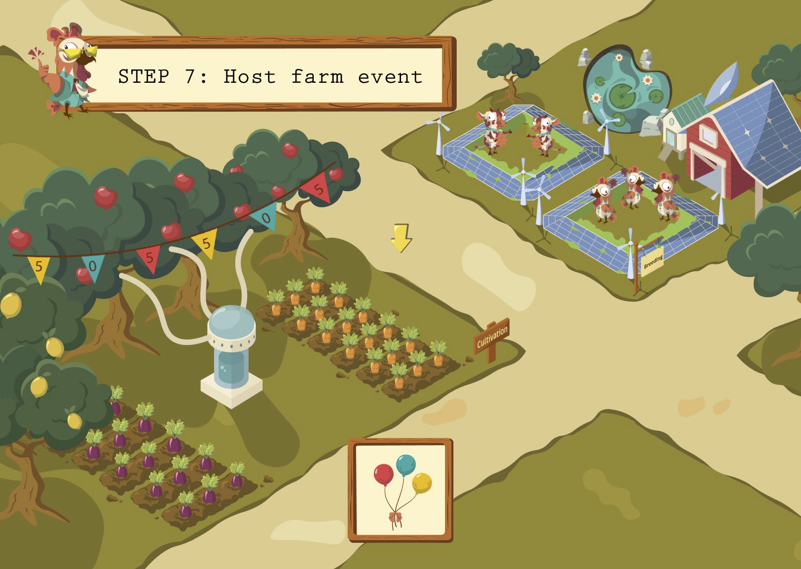
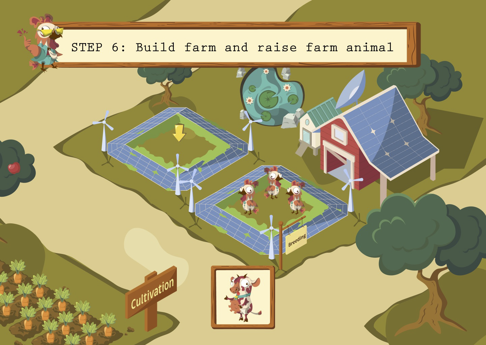
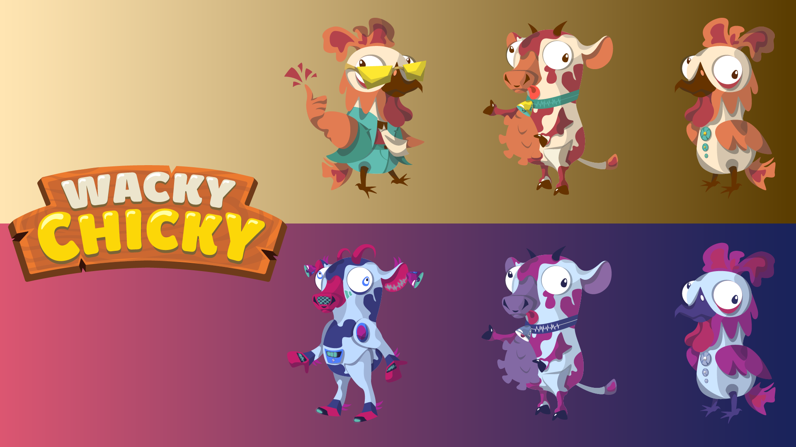

In terms of illustration, we employ flat shading style and isometric perspective art with a farm background to make two-dimensional figures look more like three-dimensional ones. In addition, our layout simulates a game with a general map where players’ activities take place.